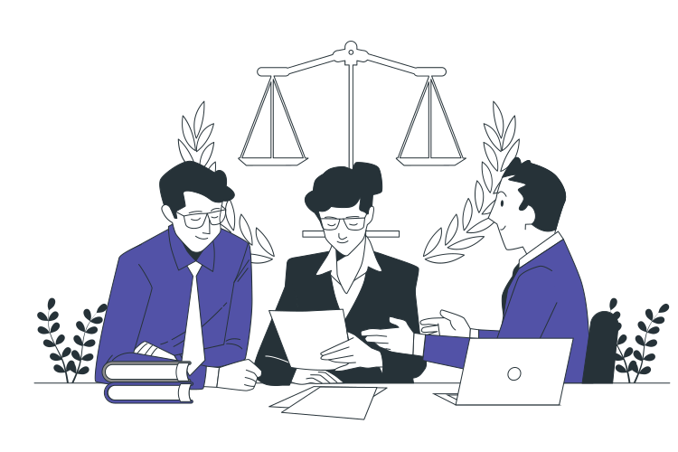

Com o aumento da produção de resíduos, os aterros sanitários estão se tornando rapidamente sobrecarregados, o que reduz seu tempo de vida útil. A falta de reciclagem e reutilização de materiais, bem como a falta de políticas públicas efetivas para lidar com o problema, contribuem para o aumento da quantidade de resíduos em aterros sanitários. Para enfrentar esse desafio, é necessário adotar práticas mais sustentáveis de produção e consumo, incentivar a reciclagem e a reutilização de materiais conscientizar a população sobre a importância de adotar práticas mais sustentáveis em seu cotidiano.
A contaminação por metais pesados é um problema grave que ocorre quando esses elementos são liberados no meio ambiente por meio de atividades humanas, como a mineração e a produção industrial. Esses metais podem se acumular em solos, águas e organismos vivos, causando graves danos à saúde
humana e ao meio ambiente. Alguns exemplos de metais pesados que causamcontaminação são o chumbo, mercúrio, cádmio e arsênio. Para evitar a contaminação por metais pesados, é necessário adotar práticas mais sustentáveis na produção e consumo de produtos, bem como políticas públicas que regulamentem o uso desses elementos e incentivem o desenvolvimento de tecnologias mais limpas. Além disso, a conscientização da população sobre os riscos associados à exposição a metais pesados é fundamental para prevenir a contaminação.

O descarte inadequado de lixo eletrônico pode causar sérios danos à saúde pública. Isso ocorre porque muitos dos componentes eletrônicos contêm substâncias tóxicas, como chumbo, mercúrio, cádmio e bifenilos policlorados (PCBs), que podem ser liberados no meio ambiente e causar contaminação de solos, água e ar. A exposição a essas substâncias pode causar problemas respiratórios, neurológicos e reprodutivos, bem como aumentar o risco de câncer e outros problemas de saúde. Para evitar esses danos, é fundamental que o lixo eletrônico seja descartado corretamente, por meio de programas de coleta seletiva e reciclagem, além de incentivar a produção de eletrônicos mais conscientes e com menor impacto ambiental.